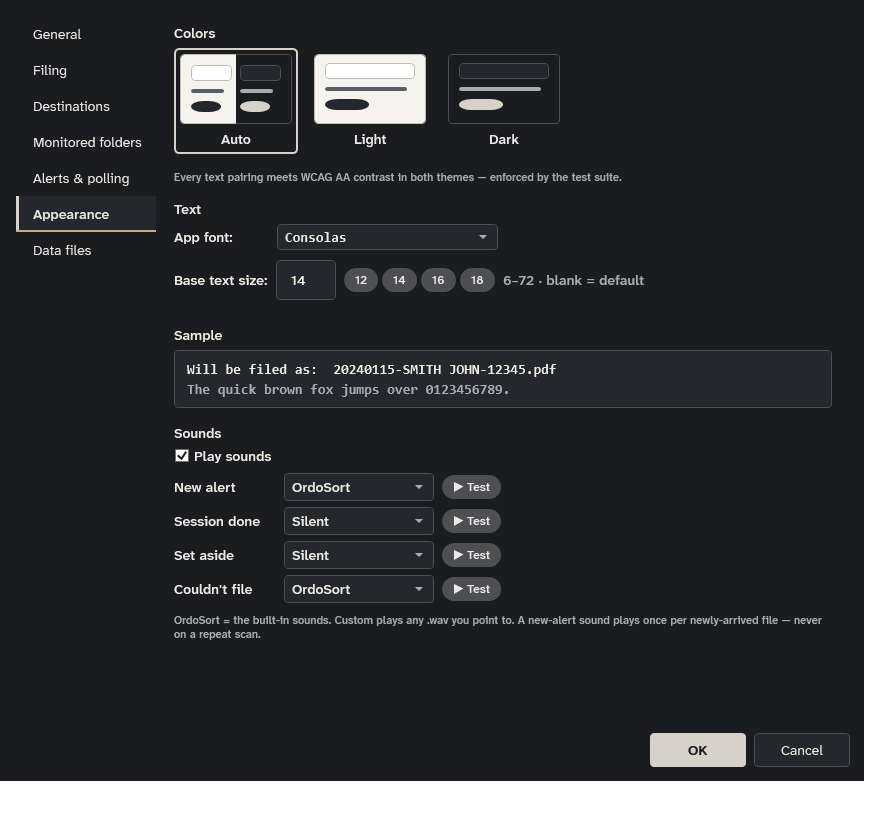
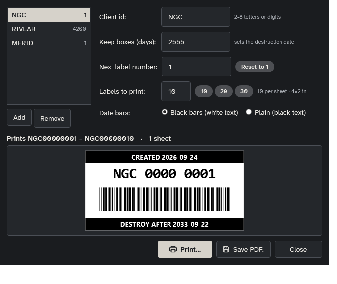

Every document,
where it belongs.
OrdoSort watches your inbox folder. When a PDF arrives, you type the name it should carry and press a destination key — it's renamed, moved, and written to an audit log that always knows where things went.
Front desk scans
How it works
-
1
Arrives
A PDF lands in your inbox folder — scanned, exported, dropped. OrdoSort is watching, and new arrivals join the queue live.
-
2
Name it
Type the name it should carry — autocomplete ranks your history by recency and frequency — and press one destination key.
-
3
Accounted for
Renamed, moved, and logged. The audit history answers where did that go, and when — and it's backed up daily.
Built for the daily pile
Dashboard & alerts
A compact dashboard parked in the corner: inbox count, monitored-folder tiles, and alert terms that flash red. Toasts, chimes, and taskbar badges reach you when something needs eyes.
Naming that keeps up
Insert, replace, prefix, or append modes; per-route overrides and hotkeys; a live "will be filed as" preview that flags illegal names before you commit.
An audit log you can trust
Every move lands in a network-safe SQLite history with daily backups, an in-app viewer, and CSV export. Several workstations can file into one shared log.
Never loses a file
Files are only ever moved — never deleted, never overwritten. A taken name gets a (2) counter, and illegal characters are rejected up front.
Tools for the awkward jobs
Unlock password-protected PDFs, bulk-rename with a hand-editable preview, match & merge against a roster, and print barcode box labels at exact scale.
Easy on the eyes
Follows Windows light or dark mode live, or stays on the one you pick. The type is Atkinson Hyperlegible, designed so I, l and 1 never look alike. Every text color pairing is held to WCAG AA contrast, enforced by a unit test.
See it in action






Free to use.
Portable, small, MIT-licensed, and made for Windows 10/11.
Download for WindowsPortable build (~3 MB) needs the .NET 8 Desktop Runtime — modern Windows offers it automatically if it's missing. The self-contained build (~70 MB) carries everything.
The download isn't code-signed yet, so Windows shows “Windows protected your PC” the first time you run it — choose More info → Run anyway. It only asks once.